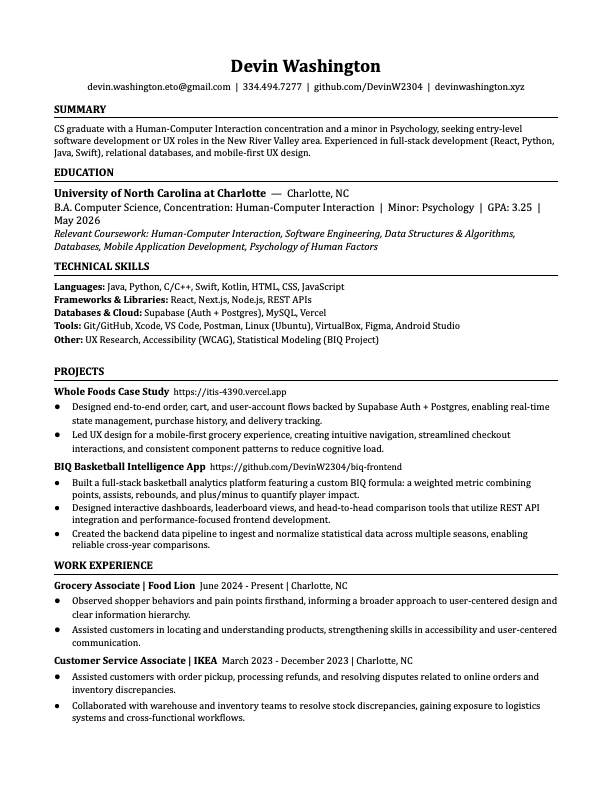

Portfolio, 2026
Devin Washington
Developer and designer in Blacksburg, Virginia. I have a B.A. in computer science from UNC Charlotte, class of 2026, with a concentration in human-computer interaction and a minor in psychology.
Currently looking for full-time work in front-end, UX, or full-stack roles. I also take on freelance projects. Email me or read my resume.
Selected work
-
BIQ
Basketball analytics, web
A site that scores NBA players with a rating model I built, then lays the results out in dashboards, leaderboards, and side-by-side comparisons. The hard part was making a lot of numbers readable. Next.js front end, FastAPI back end.

-
Whole Foods Mobile Experience
UX case study, mobile web
A mobile grocery flow — browsing, cart, checkout, order tracking — backed by a small JSON data API and later a Supabase order system. I led a six-person team through three sprints, owning the data layer and front-end integration.
-
Accessibility Lab
Accessibility, this site
A page for trying color-vision simulations, contrast, text size, and motion settings. Whatever you set there carries across the rest of this site.
-
Gift Guide
Android app
An Android app for narrowing down gift ideas through a short guided flow instead of endless list-scrolling. Kotlin and Jetpack Compose.
About
I studied computer science because I liked building things, and psychology because I wanted to understand the people using them. Most of my work sits where the two overlap: interfaces, Android apps, and the front end of the web.
Accessibility is a standing part of how I build, not a checklist at the end. This site has its own accessibility lab, and the preferences you set there follow you around.
Alongside school I've worked customer-facing jobs at IKEA and Food Lion. Watching people get lost, ask questions, and improvise around confusing signage taught me things about users that coursework couldn't — and it shows up in how I design.
- Based in
- Blacksburg, Virginia
- Education
- B.A. Computer Science, UNC Charlotte, May 2026. HCI concentration, psychology minor.
- Experience
- Team lead on a six-person, sprint-based product build. Customer-facing roles at IKEA and Food Lion.
- Day to day
- HTML/CSS/JS, React and Next.js, Kotlin and Jetpack Compose, Python, Figma, Supabase and Postgres.
- Available for
- Full-time roles and freelance projects.
Resume
A one-page summary of my education, projects, and the tools I work with. Click the preview to download a copy, or open it in your browser first.
Download the PDF View in browser
- Languages
- JavaScript, Python, Java, Kotlin, Swift, C/C++, HTML and CSS.
- Frameworks
- React, Next.js, Node.js, Jetpack Compose, REST APIs.
- Data & cloud
- Supabase (Auth and Postgres), MySQL, Vercel.
- Practice
- Git, Figma, Android Studio, UX research, usability testing, WCAG accessibility.

Freelance
I build websites for individuals and small businesses — portfolios, landing pages, sites for a shop or a practice. You get something fast, accessible, and easy to keep updated, on your own domain.
If you need one, send me an email with a rough idea of what you have in mind, and I'll reply with questions, a plan, and a quote.
Contact
The fastest way to reach me is email.
devin.washington.eto@gmail.com